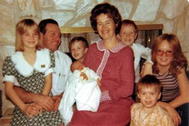

Chapter 31 – JEFFREY CHARLES BROWNING

Our last child, Jeffrey Charles Browning was born January 20, 1978. We had planned to name him Ryan, but on the way to the LDS Hospital in Salt Lake City, Ken said: “The name “Ryan” doesn’t fit with the other names of our children. Ryan is a more modern name where the other children have names that are older names. After I saw my baby and was in the recovery room, I thought of the name “Jeffrey”. I had a cousin named Jeff, Uncle Van’s son. Jeff was such a good guy, and I thought our baby looked like a “Jeff” so I talked to Ken about it. He liked it and thought it went with the names of our other children. We decided to give him the middle name of “Charles” after Ken’s father. Jeff was our third “redhead”. Sandi, Mike and now Jeff. I was happy, I love red hair. I have a red cast to my hair and my grandma Porter had red hair I am told. Jeffrey had colic, but again not as bad as Sandi had it. He was a cute little guy, but demanded a lot of my attention. Ken and I have thought that these three takes more after the Brownings, and Shellie, David and Scott take more after the Porter side of the family.